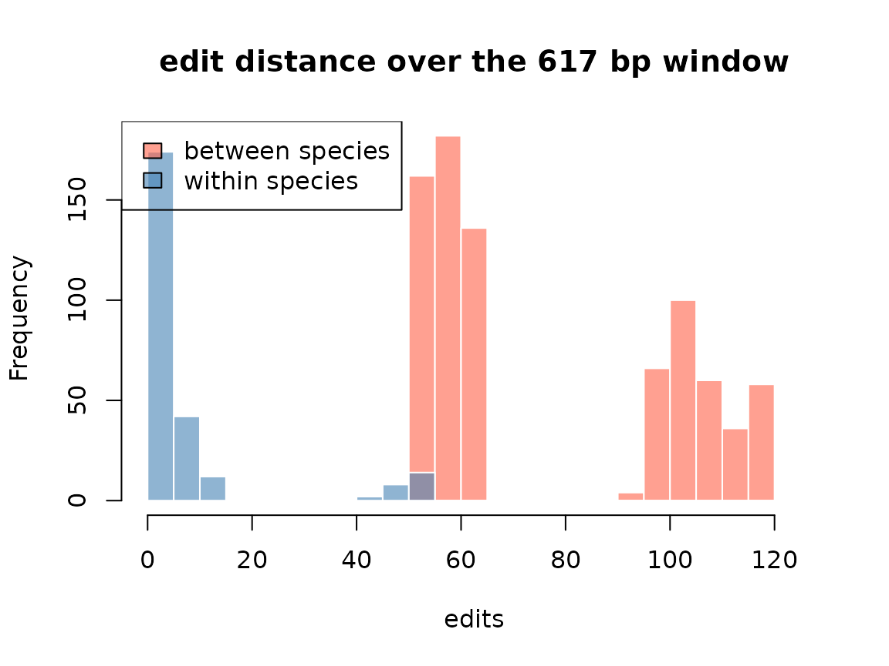

Public sequence databases give you fragments, not tidy columns of equal-length strings. Records differ in length and in which part of the gene they cover, and a few are not the gene you searched for at all. This case study takes real cytochrome b (cytb) records for three hare species — Lepus granatensis, L. timidus and L. europaeus, all of which the EcoSeek genominer catalogue flags as having population-genetic data — plus the rabbit Oryctolagus cuniculus as an outgroup, and asks:
Can bounded edit distance recover the species clusters, and what does the
resolved/smaxsemantics buy us along the way?
The dataset ships with the package, exactly as downloaded from NCBI
(see ?lepus_cytb for provenance):
data(lepus_cytb)
table(lepus_cytb$species)
#>
#> cuniculus europaeus granatensis timidus
#> 8 8 13 8
range(nchar(lepus_cytb$sequence))
#> [1] 432 1140Thirty-seven records, 400–1200 bp, mixed coverage — the raw material of every barcode or marker survey.
QC pass: which records actually are cytb?
A first align_sw() against the complete reference gene
(accession HQ596476.1, L. granatensis voucher EBD-L094) answers
two questions at once: does this record overlap the locus at all, and
where?
ref <- lepus_cytb$sequence[lepus_cytb$accession == "HQ596476.1"]
qc <- align_sw(ref, lepus_cytb$sequence, scoring = c(2, -3, 5, 2))
lepus_cytb$sw_score <- qc$score
lepus_cytb$span_start <- qc$start_i # 0-based, on the reference
lepus_cytb$span_end <- qc$end_i
lepus_cytb[order(lepus_cytb$sw_score),
c("accession", "species", "sw_score", "span_start", "span_end")][1:4, ]
#> accession species sw_score span_start span_end
#> 30 XM_017337704.3 cuniculus 22 56 66
#> 31 XM_051846530.2 cuniculus 22 817 832
#> 4 EU285251.1 granatensis 854 708 1139
#> 5 EU285250.1 granatensis 854 708 1139The two lowest scores are not low — they are nothing: spans of ~10 bp with score 22. XM_017337704.3 and XM_051846530.2 are predicted nuclear mRNAs that a “cytochrome b” title search returns anyway. A near-zero local score is the flag: whatever these records are, they are not this locus. Every pipeline has this problem; here it is visible instead of silently folded into a distance matrix.
cytb <- lepus_cytb[lepus_cytb$sw_score > 500, ]
nrow(cytb)
#> [1] 35A common window, honestly chosen
Fragments that do survive QC still cover different parts of the gene:
plot(cytb$span_start, cytb$span_end, pch = 19,
xlab = "aligned start on reference (bp)", ylab = "aligned end (bp)")
abline(h = max(cytb$span_start), v = min(cytb$span_end), lty = 2)Two records start around position 708 — much later than everything else — so the intersection over all records is a useless ~24 bp. Dropping the 3’-end pair leaves a 617 bp window shared by the remaining 33 records:
keep <- cytb[cytb$span_start < 400, ]
w <- c(max(keep$span_start), min(keep$span_end))
w
#> [1] 115 731
dropped <- setdiff(cytb$accession, keep$accession)
dropped
#> [1] "EU285251.1" "EU285250.1"Cropping each record to that window is itself a local alignment: align the window to the record and take the aligned span on the record side.
Edit distance recovers the species
Now the question of the study: pick one reference haplotype per species and ask every fragment how far it sits from each.
pick <- function(acc) keep$frag[keep$accession == acc]
refs <- c(granatensis = "JF299036.1", timidus = "LC132658.1",
europaeus = "MN098896.1", cuniculus = "AY292717.1")
for (sp in names(refs))
keep[[paste0("d_", sp)]] <-
align(keep$frag, pick(refs[sp]), smax = 511, with_cigar = FALSE)$score
d <- aggregate(cbind(d_granatensis, d_timidus, d_europaeus, d_cuniculus) ~ species,
keep, median)
print(d, right = FALSE)
#> species d_granatensis d_timidus d_europaeus d_cuniculus
#> 1 cuniculus 100 118 106.0 3.5
#> 2 europaeus 55 60 2.5 106.0
#> 3 granatensis 2 62 54.0 101.0
#> 4 timidus 61 6 62.0 117.5The diagonal is the within-species scale (0–8 edits); off-diagonal entries are the between-species scale (~55–64 within Lepus, ~100+ to the rabbit). The barcode gap — the empty interval between “same species” and “different species” distances — is the whole reason cytb works as a marker, and here it is computed with three calls.
ids <- keep$accession
within <- unlist(lapply(seq_len(nrow(keep)), function(i)
align(keep$frag[i], keep$frag[keep$species == keep$species[i] & ids != ids[i]],
smax = 511, with_cigar = FALSE)$score))
between <- unlist(lapply(seq_len(nrow(keep)), function(i)
align(keep$frag[i], keep$frag[keep$species != keep$species[i]],
smax = 511, with_cigar = FALSE)$score))
br <- seq(0, max(c(within, between)) + 5, by = 5)
hw <- hist(within, breaks = br, plot = FALSE)
hb <- hist(between, breaks = br, plot = FALSE)
plot(hb, col = adjustcolor("tomato", 0.6), border = "white",
ylim = c(0, max(hw$counts, hb$counts)),
main = "edit distance over the 617 bp window", xlab = "edits")
plot(hw, col = adjustcolor("steelblue", 0.6), border = "white", add = TRUE)
legend("topleft", c("between species", "within species"),
fill = c(adjustcolor("tomato", 0.6), adjustcolor("steelblue", 0.6)))
Two honest caveats the numbers surface for free: the Oryctolagus within group splits into two mtDNA lineages (~0 and ~55 edits — a documented polymorphism in the rabbit), and timidus isolate ALT2 sits ~48 edits from the European timidus references, a divergent Asian lineage. Edit distance does not paper over structure that is really there.
smax is a claim about relatedness
At the default smax = 64 the outgroup comparisons simply
do not resolve:
align(keep$frag, pick(refs["cuniculus"]), smax = 40, with_cigar = FALSE)$resolved |> table()
#>
#> FALSE TRUE
#> 28 5Twenty-eight unresolved pairs is not a failure — it is the library saying “these are more than 40 edits apart” instead of returning 28 wrong numbers. Raise the bound and they resolve, with the true scores:
align(keep$frag, pick(refs["cuniculus"]), smax = 200, with_cigar = FALSE)$score |> range()
#> [1] 0 119The bound is a hypothesis: if two sequences are related at the
scale you care about, they resolve; if not, you hear about it.
Choosing smax is choosing where the barcode gap ends —
cheap to compute, impossible to get silently wrong.
Takeaway
Starting from a naive NCBI dump — mixed lengths, mixed coverage, two
mislabelled records — three align_sw/align
calls produced: a locus-QC filter, a defensible common window, and a
distance table in which the species clusters are unambiguous. The flags
resolved, rescore_ok and
wellformed_ok travel with every row, so downstream code
never has to guess whether a number is real.